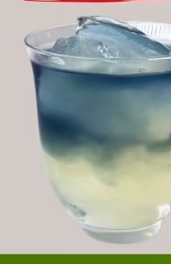
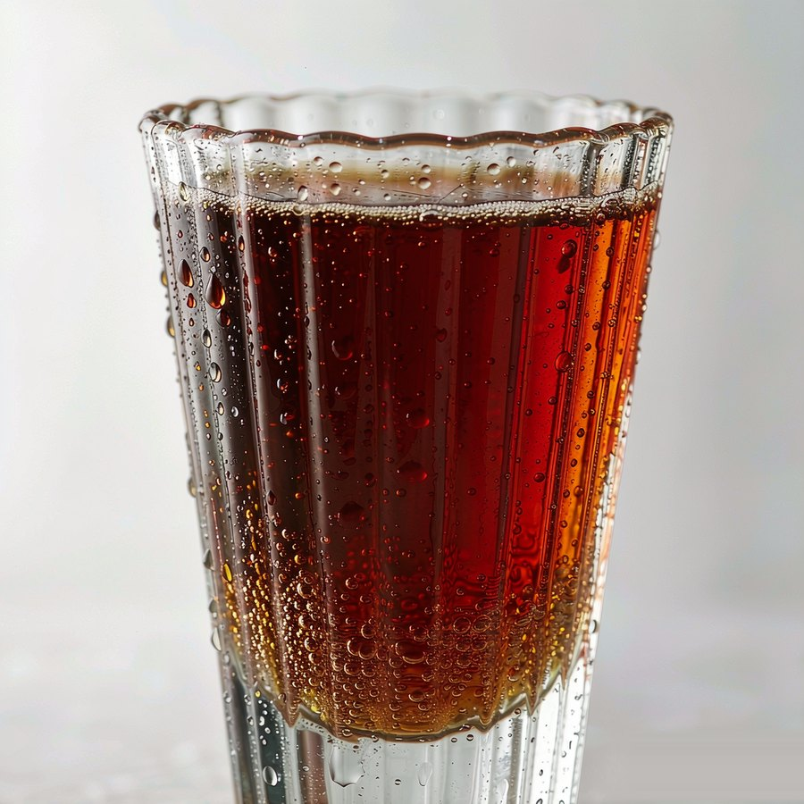
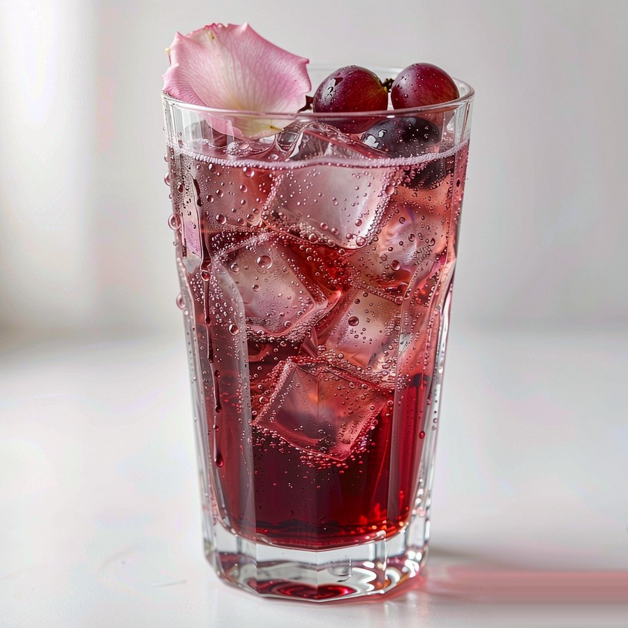

Spirits Atlas · 种类 / 产地 / 价格
名酒图鉴
九大酒类、33 款代表酒。每一类先讲清「它是怎么来的」，再逐瓶看产区、度数、参考价、口感与用法。价格是公开渠道的常见参考区间，不是报价单——同一瓶酒，渠道、年份与税负都能让数字差出一截。
建议按「选酒类 → 看酿造工序 → 点卡片读单瓶档案」的顺序逛；想直接找某一瓶，用下面的搜索框搜酒名、产地或风味词。

按酒类切换：先看右侧「它是怎么来的」和下面那排工序胶囊（从原料处理到装瓶，按顺序排列），再点开任意酒款卡片看产区、度数、口感、酿造与适合怎么喝。左侧配图会跟着酒类一起换。

价格口径：以 2026 年主流电商与线下商超的常见零售区间为参考，按 500ml / 700ml / 750ml 常规装折算；限量版、单一年份、免税与礼盒装会明显偏离。买酒请认准正规渠道与中文背标，未成年人禁止饮酒。
价格只用来做同类横向比较，不构成购买建议；点开任意卡片可看单瓶的完整档案。若与实物酒标或品牌官方信息不一致，以后者为准。
Price · 价差从哪来
同一类酒，为什么能从几十卖到几万
看懂这三件事，就不会被「贵=好喝」牵着走。日常调酒，中端价位往往已经足够。三张卡分别对应时间、产区、渠道，买之前先想清楚自己在为哪一项付钱。
Label Reading · 读标
酒标上真正有用的四行字
下面四条按瓶身信息的常见顺序排列：先看原料，再看度数，然后产地与年份。点开每一条看具体含义和容易踩的坑，买之前对照实物酒标看一遍就够用。
原料与配料表：先看有没有「食用酒精」
中国白酒分固态法、液态法与固液法。配料只有水和高粱/小麦等粮谷，通常是固态法；出现「食用酒精」「食用香料」，则为液态法或固液法，价格与风味取向不同。威士忌看是否标注单一麦芽（Single Malt）、调和（Blended）；龙舌兰看「100% Agave」。
酒精度：40% vol 是烈酒的常见门槛
中国白酒常见 38–53% vol，威士忌/白兰地/金酒/伏特加多为 40% vol 左右，朗姆 37.5–40%，龙舌兰 38–40%，利口酒 15–30%，啤酒 2.5–8%，葡萄酒 11–15%。调酒时用 40 度基酒 50ml，约等于一瓶 500ml、5 度啤酒的纯酒精量——这是控制节奏的换算尺。
产地标识：地理标志是风味承诺
「苏格兰威士忌」必须在苏格兰蒸馏并陈年至少 3 年；「干邑」必须来自法国干邑区并以特定葡萄双重蒸馏；「香槟」只能是法国香槟区的起泡酒。中国的地理标志产品（如茅台酒、绍兴酒）同样绑定产区。没有这些字样，不代表不好，只是不能拿产区的价格逻辑来套。
年份与批号：不是所有「年份」都同义
葡萄酒的年份指采摘年，反映气候；威士忌标签上的「12 年」指瓶中酒液的最低陈年时间；干邑的 VS/VSOP/XO 分别对应最低 2/4/10 年桶陈；中国白酒的「年份」多为勾调概念，尚无统一强制定义。买之前先弄清这个数字在说哪件事。

说明：本页酒款档案为公开资料整理，价格随市场波动，仅作入门参考。想从调酒开始，请先看 新手入门；想看每类酒的完整做法与口感，点上方卡片。理性饮酒，微醺胜买醉。
档案以「认识这一类酒」为目的，不是评级或推荐榜；同名的不同版本请以实物酒标与品牌官方信息为准。